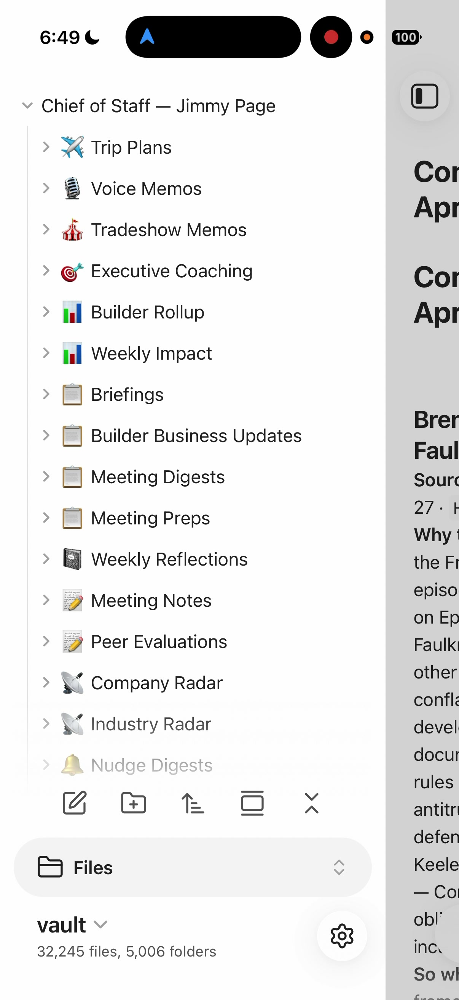
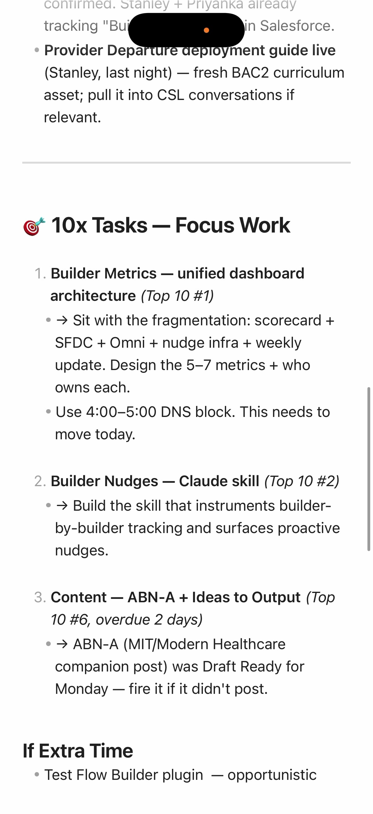
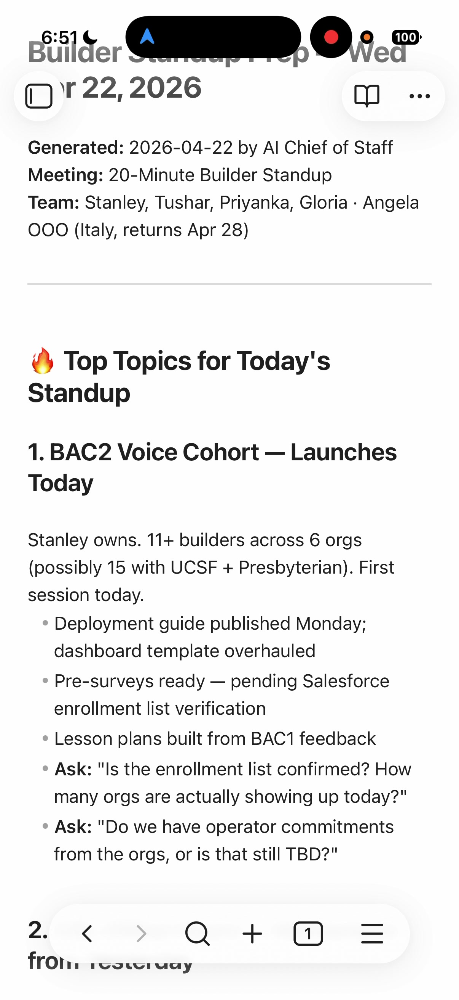
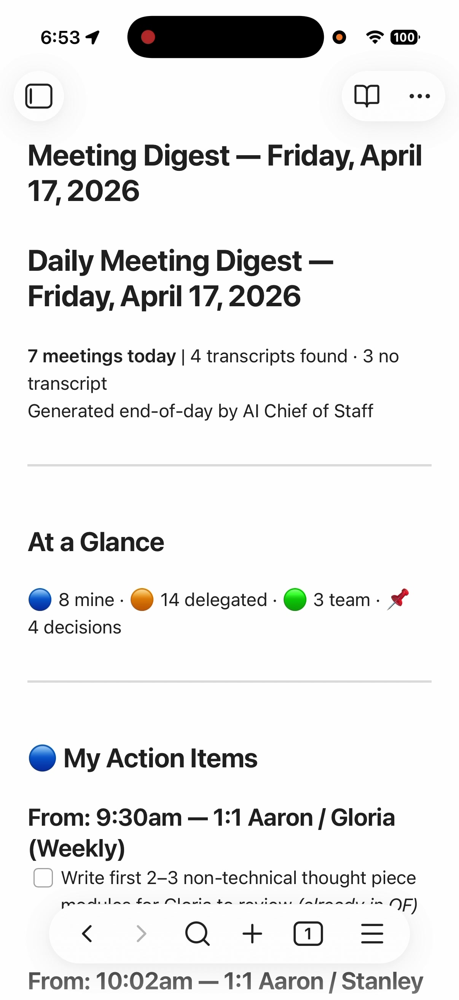
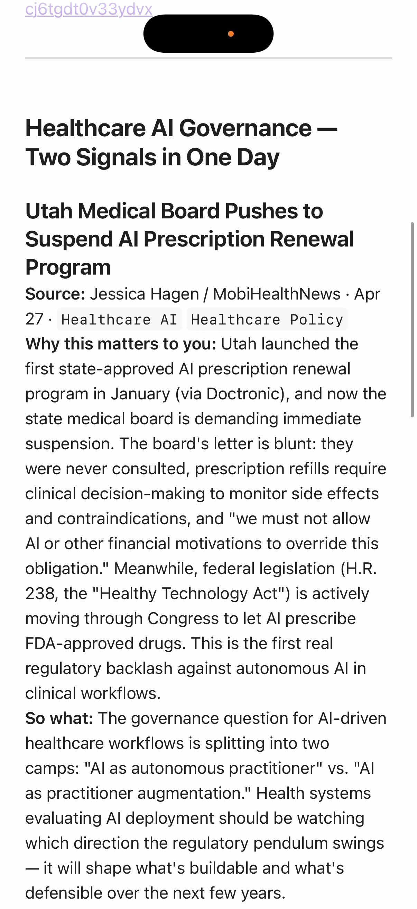

60+ AI workflows, unified into an executive operating system. Connected to every tool I already use — calendar, email, chat, tasks, docs, and more.
The AI Chief of Staff is a system of AI agents that work together as an executive operating system — preparing me for meetings, tracking who owes what to whom, scanning for emerging issues across the company, managing content and publishing, and synthesizing everything into a daily operating rhythm. It doesn't replace thinking. It removes the friction so I can focus on what actually matters.
A set of structured files that teach the AI who I am, how I work, my team, my priorities, and the tools I use. This is the foundation — when I update my quarterly priorities, every agent in the system immediately shifts its behavior without being individually retrained.
Reusable workflows I trigger with a single command — each one solves a specific recurring problem like meeting prep, daily briefing, weekly review, delegation tracking, or content editing. Think of them like macros, but intelligent.
Direct integrations that let the AI read and write to my existing tools — calendar, Slack, task manager, wiki, email, and more. No copy-pasting, no switching tabs. The AI goes to the source.
Daily and weekly rituals that compound over time. A voice memo I record in the evening feeds the next morning's briefing, which feeds meeting prep, which feeds an end-of-day action sweep, which feeds the next day. Each step makes the next one smarter.
Here's what the system actually looks like when I use it day-to-day. These are real outputs from my live system.





Watch a 5-minute walkthrough of the live system:
▶ Watch the Demo on LinkedInFour layers working in a loop: my existing tools feed data into the AI engine, the engine draws on a knowledge layer I've built about how I work, and it produces outputs that flow back into the tools I already use. The loop gets smarter over time.
Calendar · Slack · Task Manager · Wiki/Docs · Email · RSS Reader · Cloud Storage · Notes
Meeting prep · Daily briefing · Delegation tracking · Company radar · Industry scan · Content editing · Coaching
Who I am · How I work · My team · My priorities · My tools · Voice memos · Weekly reflections
Meeting preps · Briefings · Action items · Delegation nudges · Content drafts · Intelligence reports · Tasks
The system is organized into six functional domains. Each workflow pulls live data from connected tools, applies everything the system knows about me and my priorities, and produces a ready-to-use output.
The individual workflows are useful on their own, but the real leverage is the rhythm. Each step feeds the next, creating a compounding loop where every day makes the system smarter.
Reads last night's voice memo, pulls today's calendar, checks my top priorities, and scans Slack for overnight signals. Outputs a one-page day plan I read over coffee.
Gathers shared notes, recent decisions, open threads, and team context. Detects whether it's a coaching 1:1 or a coordination meeting and adjusts accordingly. I walk into every meeting prepared.
Company radar surfaces internal conversations where my input is needed. Industry radar scans my reading list for relevant news. Both run on a schedule so I don't have to remember to check.
Reads through every meeting transcript from the day and extracts commitments I made. Creates tasks automatically so nothing falls through the cracks.
I record a 5-minute voice memo reflecting on the day — what happened, what I'm thinking about, what needs attention. The system transcribes and structures it for tomorrow's briefing.
Guided reflection, wins inventory, and Top 10 priority planning for next week. This feeds Monday's weekly orientation, closing the loop.
The system plugs directly into the tools I already use every day. No new apps to learn — just an intelligent layer on top of the workflow I already have.
Building an AI Chief of Staff is less about technical skill and more about knowing where to start and being willing to iterate. Here's what I've learned after months of doing this.
This will feel weird at first. Just do it. Record your thoughts every day for two weeks — on your phone, while driving, wherever. Use your phone's native transcription. Don't worry about quality, just capture. Then feed those memos to an AI and ask it to find insights and patterns. You'll be shocked how much useful information you surface. This raw thinking becomes the highest-value input in the entire system.
Before your AI can work to your specifications, you have to write down what your specifications are. How do you like your day structured? What does a good 1:1 look like? What are your priorities this quarter? What's your communication style? The more you document, the less you have to explain, and the more every agent benefits from the same foundation. This doesn't have to be perfect — just start. Practical tip: these files are all plain-text Markdown (.md), which can look intimidating if you're not a developer. Download Obsidian (free) — it turns a folder of Markdown files into something that feels like a polished notes app, with formatting, linking, and search. It's what I use every day.
Not the most complex one. The one that's the biggest recurring headache. Your 1:1 prep. Your weekly status email. Your meeting prep. Build one agent that handles it. Use it for a month. Iterate until the output is 95% right — don't settle for 70% and manually fix it every time. Then build the next one. If you're not emotionally invested in the problem, you won't put in the work to get the agent past "interesting."
The agents that create leverage map to recurring jobs you struggle to do well — not because they're hard, but because they're fragmented, repetitive, or cognitively expensive. Ask yourself: Where would you hire 100 more people if you could? What would you have an intern do? What high-leverage work happens inconsistently because no one has time? Those are the agents worth building.
The real power isn't any individual agent — it's the knowledge layer that builds over time. Every voice memo, every reflection, every decision you capture makes every future agent more capable. An agent that runs once has no memory. An agent that's run dozens of times, drawing on months of reflections and memos, operates on a fundamentally different level. Start now, because the biggest advantage is the months of compounding knowledge.
I've written extensively about the system, the lessons learned, and the principles behind it.
The flagship walkthrough — from individual agents into a unified executive operating system. Covers the five-question framework, the knowledge layer, the weekly rhythm, and how compound intelligence works.
Read on LinkedIn → Article — Part 1The five categories of agents that consistently deliver value: preparation, follow-through, synthesis over time, turning raw thinking into leverage, and work you'd never do manually at scale.
Read on LinkedIn → Article — Part 2Eight hard-won lessons: pick problems that matter, clarity beats clever prompts, don't settle for 70% good, context is everything, use AI to improve your AI, and revisit failed experiments.
Read on LinkedIn → PostFor non-technical professionals who feel behind on AI adoption. Four practical steps to get started — the gap isn't capability, it's knowing where to begin.
Read on LinkedIn → Video · 5 minAn unscripted 5-minute screen recording of the live system in action: pulling up a daily briefing, running meeting prep, voice memo processing, end-of-day action sweep, and industry radar scan.
Watch on LinkedIn →The starter kit includes guided workbooks, a workspace template, example workflows, and a 3-week onboarding plan. You'll need Claude Code and about two hours to get the foundation set up.
Get the Starter Kit →